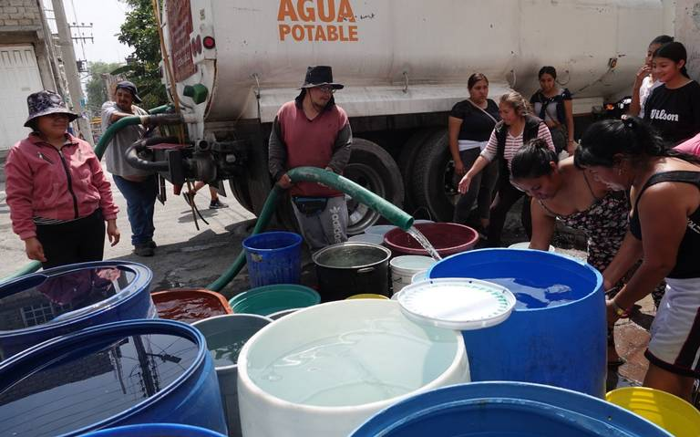
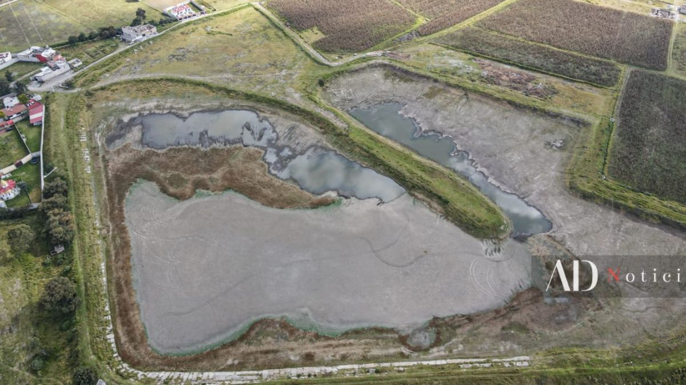
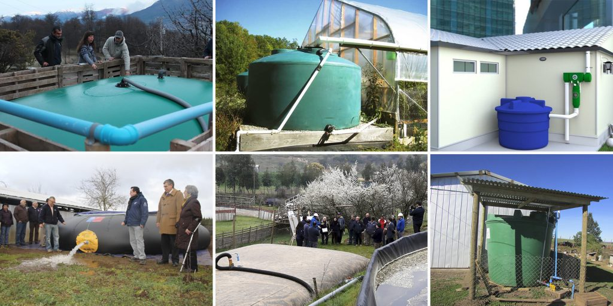
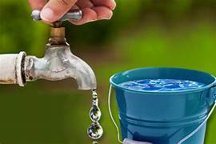
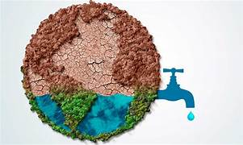

El Agua en Zinacantepec: Los Números que no Mienten
Nuestro municipio tiene una situación única que pocos conocen:
Zinacantepec recibe más de 1,070 mm Esto equivale a más de 1 metro de agua sobre todo el municipio anualmente de lluvia cada año. ¡Es como si cayera más de un metro de agua sobre todo el municipio!
A pesar de tanta lluvia, más de 12,000 familias (1 de cada 3 hogares) sufren constantemente de falta de agua.
De toda el agua que debería llegar a las casas, 4 de cada 10 litros40% del agua se pierde por fugas en tuberías viejas se pierden por fugas.
8 colonias presentan la situación más crítica: San Luis Mextepec y Santa María del Monte son las más afectadas, con cortes de agua que pueden durar varios días.
Tenemos agua suficiente cayendo del cielo, pero no estamos logrando que llegue a donde más se necesita: los hogares de nuestras familias.

La Crisis Hídrica en Zinacantepec: Un Problema Real y Urgente
El problema en Zinacantepec no es la falta de agua, sino un sistema de gestión que no ha podido garantizar su acceso para todos.
Escasez en Medio de la Abundancia: Según el Atlas de Riesgos municipal, el municipio tiene una precipitación promedio de 1,070 mm al año.
Sin embargo, esta agua no se capta ni almacena de manera eficiente. Datos del INEGI y OPDAPAS indican que cerca de 12,000 familias (35%) padecen desabasto o servicio por tandeo.
La sobreexplotación del acuífero y las fugas en la red (más del 40%) agravan el problema.
La Laguna de Ojuelos refleja esta crisis, mostrando una reducción alarmante de su nivel por sequías, sobreexplotación y cambio climático.
Colonias más afectadas por la escasez
San Luis Mextepec - Suministro cada 4 días en temporada crítica.
Santa María del Monte - Dependencia de pipas.
San Cristóbal Tecolit- Cortes prolongados de servicio.
San Juan de las Huertas - Problemas de presión.
San Antonio Acahualco - Acceso limitado al agua.
Esta situación obliga a miles de vecinos a gastar en pipas, afectando su economía y calidad de vida.

La Respuesta: Captar el Agua que Ya Tenemos
Los sistemas de captación de agua de lluvia son la solución práctica, económica y ecológica que Zinacantepec necesita.
¿Cómo Funciona un Sistema de Captación?
Tu techo como recolector: convierte tu casa en tu propia fuente de agua.
Canaletas que guían el agua hacia el sistema de almacenamiento.
Un filtro que limpia las impurezas iniciales.
Un tanque para almacenar (desde 2,200 litros en adelante).
Un sistema opcional de purificación para usos domésticos.

¿Para Qué Podemos Usar Esta Agua?
Riego de plantas y jardines
Limpieza de patios y pisos
Lavado de automóviles
Descarga de inodoros
Con tratamiento: para toda la casa

Beneficios que Transforman Vidas
Independencia hídricaDeja de depender del tandeo y pipas, ten tu propia agua siempre disponible
Ahorro económicoReduce hasta un 50% el gasto en pipas y agua embotellada
Solución ecológica: conserva mantos acuíferos.
Preparación para sequías futuras.
Ya hay familias en Zinacantepec que están cosechando su propia agua. ¡Tú puedes ser la siguiente!

Recursos y Soporte para tu Sistema
Encuentra toda la información que necesitas para mantener y aprovechar al máximo tu sistema de captación.
🔧 Mantenimiento del Sistema
Consejos prácticos para mantener tu sistema en óptimas condiciones:
Limpia canaletas cada 3 meses
Revisa filtros después de cada lluvia fuerte
Limpia tanques cada 6 meses
Revisa fugas mensualmente
❓ Preguntas Frecuentes
Resolvemos tus dudas más comunes sobre captación pluvial:
¿Cuánto cuesta instalar un sistema?
¿Funciona en época de secas?
¿Qué mantenimiento requiere?
¿Es seguro para uso doméstico?
🏪 Proveedores en Zinacantepec
Encuentra instaladores y proveedores confiables en tu zona:
EcoTecnologías MX - Sistemas completos
AquaSolutions - Mantenimiento
CaptaLluvia - Tanques y filtros
+3 proveedores locales verificados
¿Estás Listo para Dejar la Escasez de Agua en el Pasado? Tus datos estan seguros con nosotros, los ocuparemos para fines comunitarios
Tu participación es esencial para hacer de Zinacantepec un municipio con seguridad hídrica. Completa este formulario y sé parte de la solución:
También puedes contactarnos directamente:
📞 Teléfono: 7227749790
💬 WhatsApp: 7221481622
📧 Correo: hola@xd.com
🔧 Tips de Mantenimiento
Limpieza de canaletas: Realízala cada 3 meses o después de tormentas fuertes para evitar obstrucciones.
Revisión de filtros: Limpia después de cada lluvia intensa. Reemplaza cada 2 años.
Limpieza de tanques: Cada 6 meses vacía y limpia el interior con cepillo suave y agua a presión.
Revisión de fugas: Mensualmente revisa conexiones y válvulas. Aprieta si es necesario.
Preparación para secas: Al final de temporada de lluvias, limpia todo el sistema y cubre entradas.
Preparación para lluvias: Antes de la temporada, destapa y revisa todo el sistema.
Nota: Siempre contrata profesionales para reparaciones complejas.
❓ Preguntas Frecuentes
¿Cuánto cuesta instalar un sistema básico?
Un sistema familiar de 2,200L cuesta entre $8,000 - $15,000 MXN dependiendo de materiales y complejidad.
¿Funciona durante todo el año?
Sí, el agua captada en temporada de lluvias se almacena para usar en época de secas.
¿Qué mantenimiento requiere?
Limpieza básica cada 3-6 meses. Revisión de filtros después de lluvias fuertes.
¿Es seguro para consumo humano?
Con el tratamiento adecuado (filtración y purificación) sí es seguro. Para inicio, recomendamos uso en sanitarios y limpieza.
¿Cuánta agua puedo captar?
En Zinacantepec puedes captar aproximadamente 1,000L por cada 100m² de techo por lluvia intensa.
¿Necesito permiso municipal?
No se requiere permiso para sistemas domésticos de captación pluvial.
🏪 Proveedores en Zinacantepec
EcoTecnologías MX
📍 Av. Principal #123, Zinacantepec Centro
📞 722 345 6789
🛠 Sistemas completos, instalación y mantenimiento
AquaSolutions
📍 Calle Morelos #45, Santa María
📞 722 987 6543
🛠 Mantenimiento especializado, reparaciones
CaptaLluvia
📍 Carretera Toluca #234, San Luis
📞 722 456 7890
🛠 Tanques, filtros y accesorios
AguaSustentable
📍 Plaza Comercial Local 12, Zinacantepec
📞 722 234 5678
🛠 Sistemas comunitarios y residenciales